|
2016 Report on the State of the PLAN 
Note: For all photos in the report, refer to This Flickr Album for high resolution images of teach.
2. AMPHIBIOUS ASSAULT DEVELOPMENTS
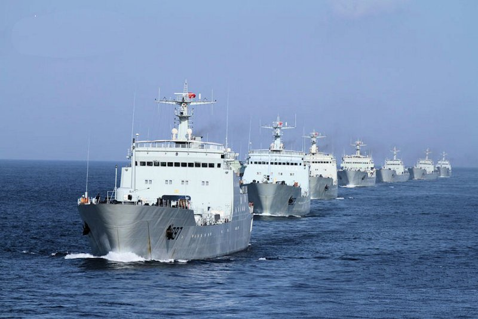
Type 072A LST: The vessels, while having to proceed right to the shore, are nonetheless very capable LSTs, among the most capable and modern remaining LST vessels available. 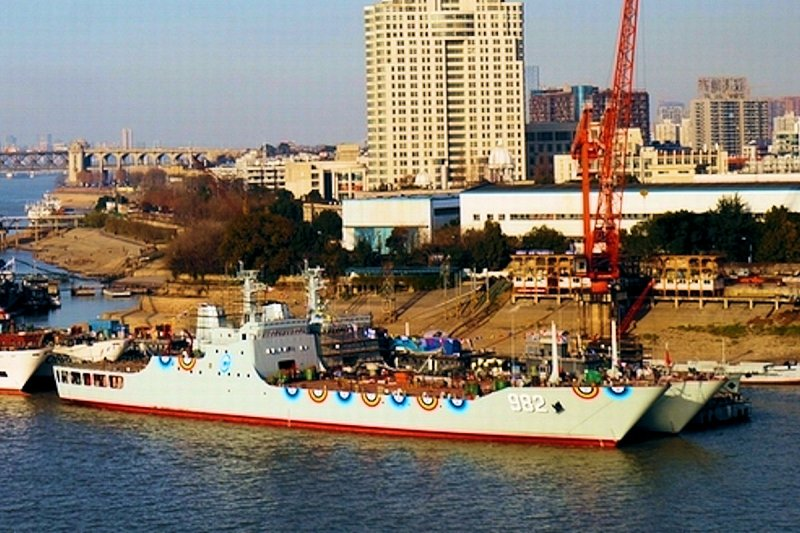 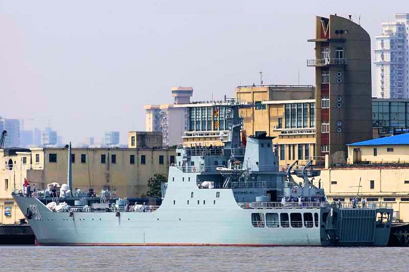 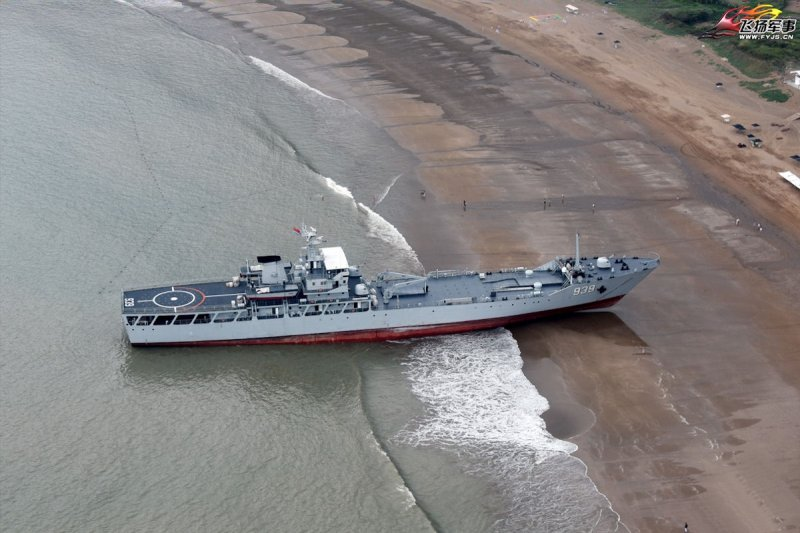 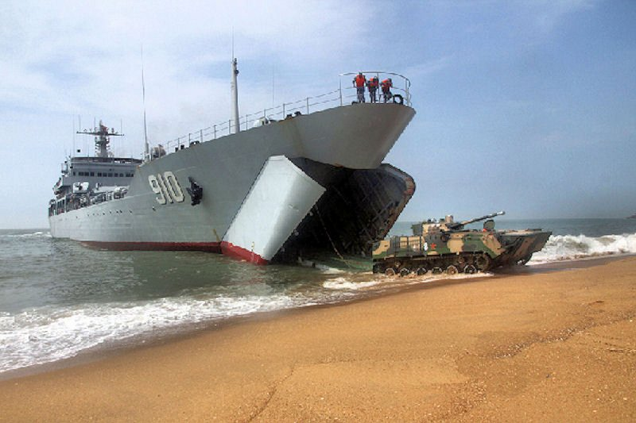 Two new Type 072A landing ships were launched and commissioned in 2015.
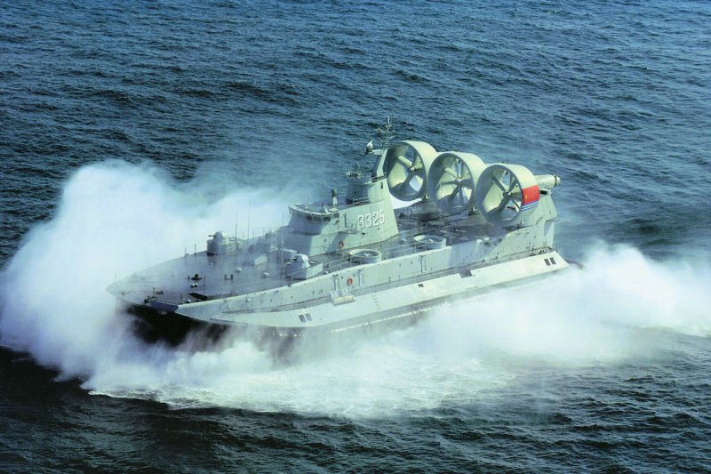
Zubr Large Air Cushoned Landing Craft: Now they have done so. Two new vessels have been procuded at Chinese yards, launched and commissioned in 2015. It is unclear at this point if, and how many of the vessels the Chinese may build. These vessels have a crew of 30, displace 550 tons and can carry over 150 tons consisting of three main battle tanks, or ten armoured vehicles with 140 troops, or 8 armoured personnel carriers or 8 amphibious tanks and up to 500 troops. By comparison the US Navy LCAC vessels have a crew of five, displace 180 tons, and carry up to 75 tons of men and equipment, meaning one main battle tank, or two IFV and a few troops, or up to 180 troops. Of course the US LCAC were designed to fit into the well deck of US Navy amphibious assault vessels and the Zubr is designed to make its way across the sea on its own. With their reclamation activities in the South China Sea, where they have created seven large bases from what used to be shoals, and with continued reclamation efforts in the Parcel Islands, these vessels make ideal patrol, security, and reinformcement vessels for those holdings. 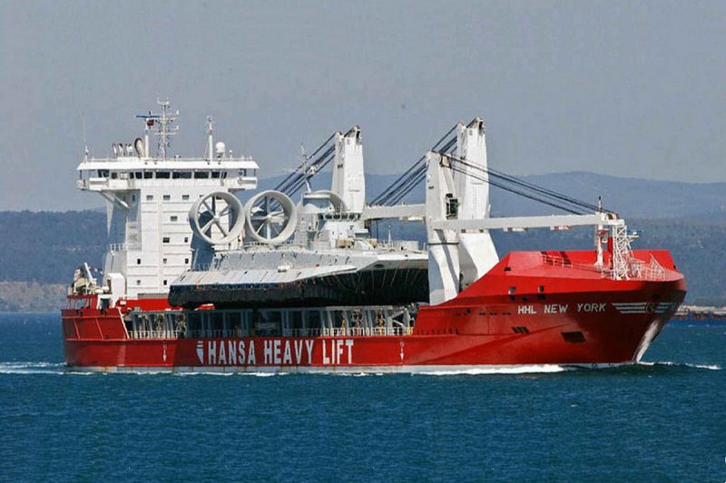 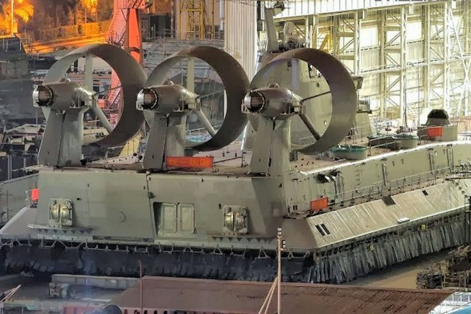 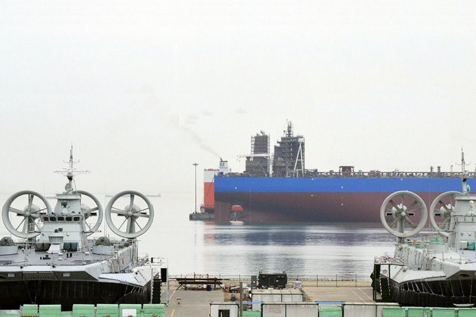 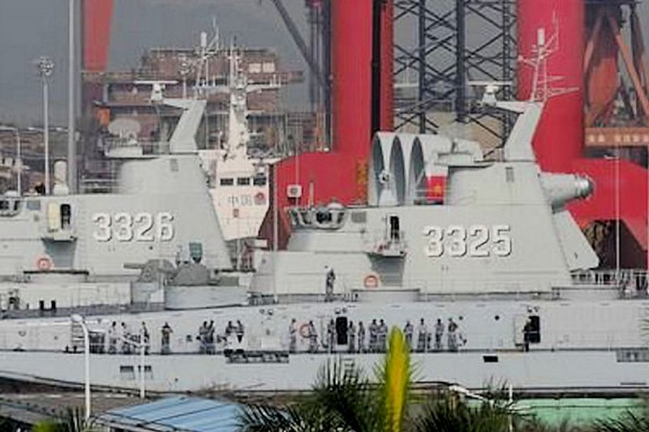 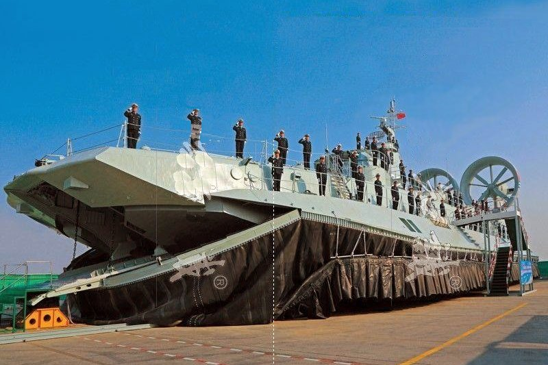 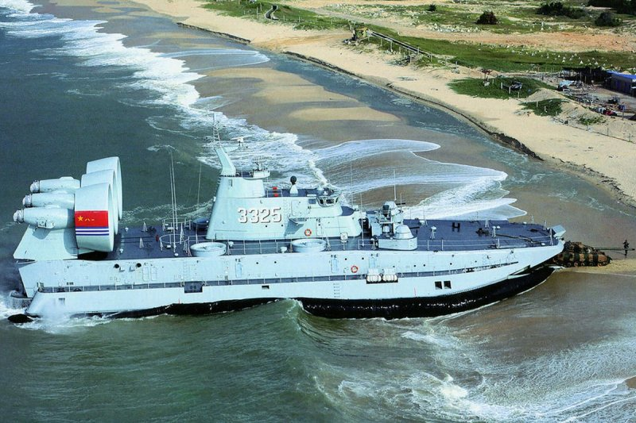 As stated, two new Zubrs were commissioned in 2015. This makes four altogether. It is not known if the PLAN will build more.
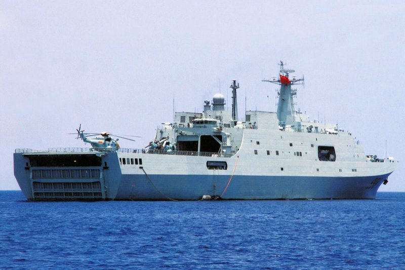
Type 071 LPD Amphibious Assault vessel: These large vessels displace upwards of 25,000 tons, and have a large well deck capable of carrying up to four of the PLAN's own normal sized LCACs. Two more vessels are on order and the fifth has started building. It is expected that the PLAN will build a total of six or more of these vessels. 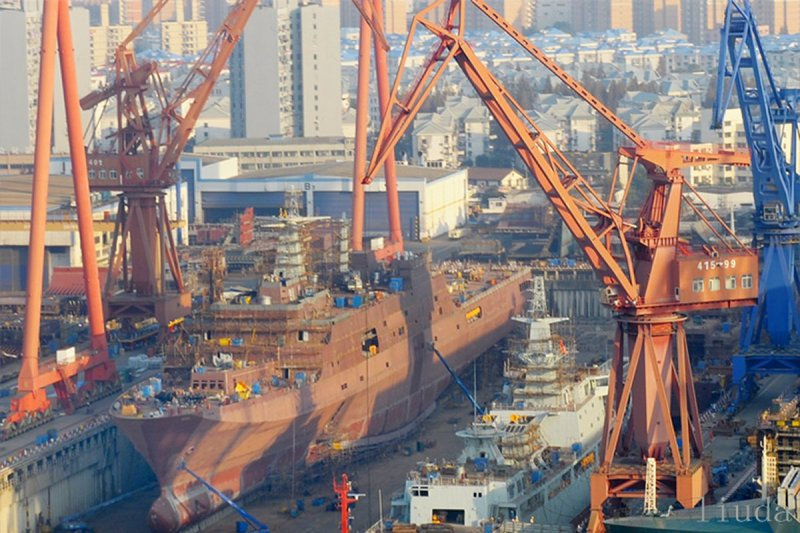 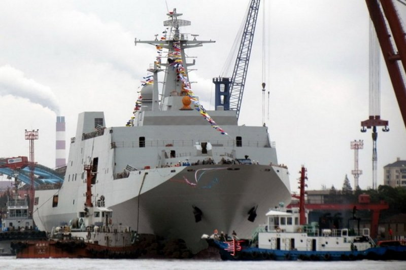 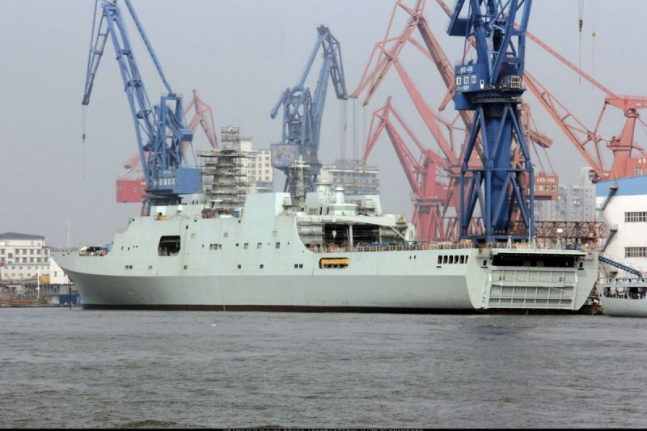 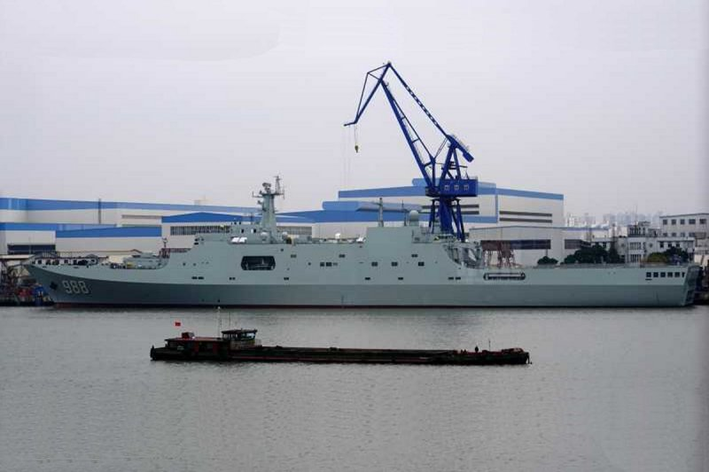 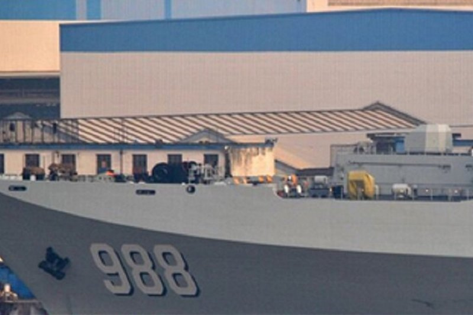 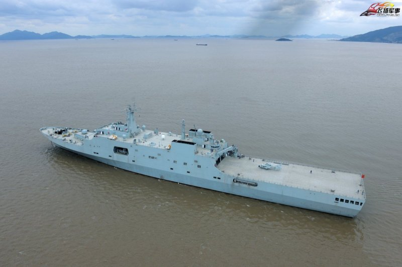 These vessels, in conjunctin with the current LPDs that the PLAN has also built and deployed, along with its LST fleet, could be used to form effective Amphibious Ready Groups for the Chinese.
Go to 3. Naval Air Developments of the 2016 PLAN Report RETURN TO MAIN PAGE OF THE 2016 PLAN REPORT
Other links of Interest:
World-Wide Aircraft Carriers
|